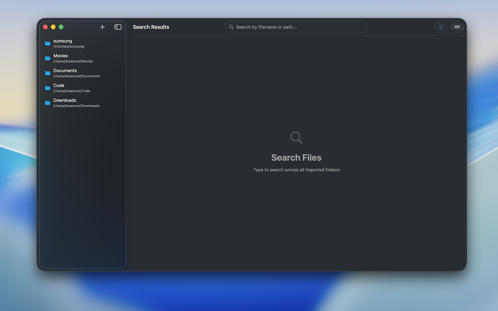
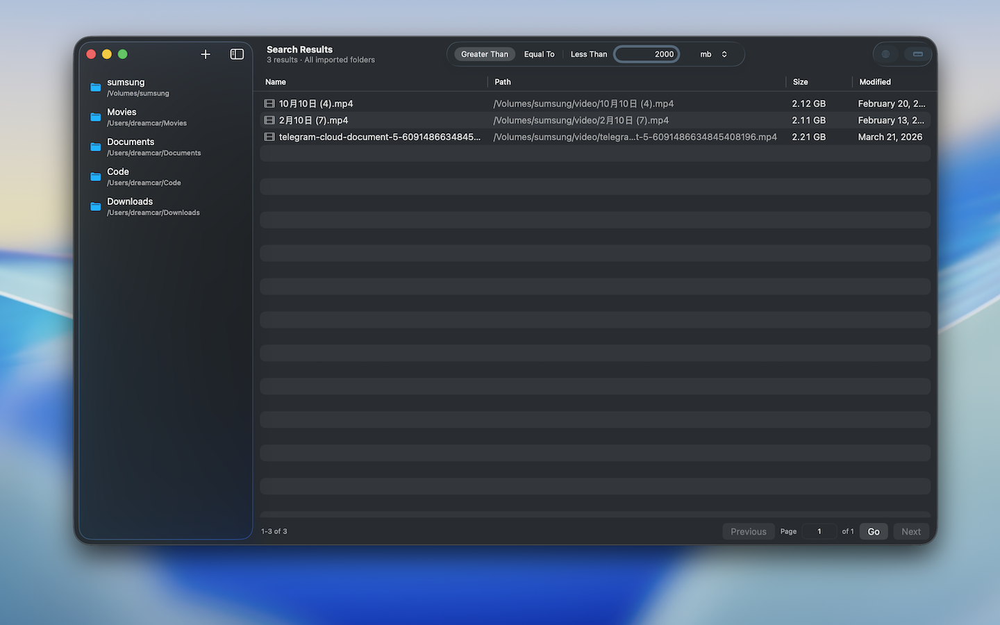
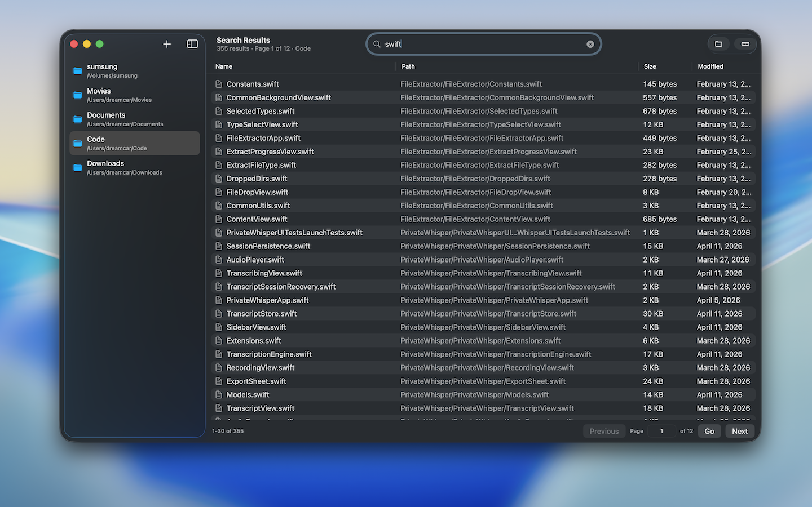

LOCAL-FIRST FILE SEARCH
Search across your Mac folders with speed, clarity, and privacy.
SearchFiles is a macOS desktop app that indexes file metadata on your device, keeps access read-only, and helps you find documents, code, and media in seconds.

Private by design
Index stays on your Mac.
Built for speed
Search paths, names, and metadata instantly.
WHY SEARCHFILES
A focused desktop search experience for real working folders
SearchFiles is designed for people who work with large local libraries and need search that stays understandable, lightweight, and private.
Import only the folders you choose
The app stores security-scoped bookmarks for user-selected folders, so you stay in control of which locations are indexed.
Search by name, path, and relative path
Find the file you want across imported folders without opening Finder windows or remembering exact locations.
Filter intelligently as your library grows
Narrow large result sets by folder scope, file size, and indexed metadata to keep results actionable.
Respect the boundaries of your files
SearchFiles indexes metadata, not file contents, and it requests read-only access to folders you explicitly import.
PRODUCT TOUR
Three key views that explain the product quickly
The screenshots below show the import flow, size-based filtering, and broad code search inside real project folders.
Overview
Start with imported folders you already trust
A clean sidebar keeps imported locations visible, while the main workspace stays focused on search and results.

Filter
Locate large files with fast metadata filtering
Built-in file size filtering helps you surface oversized videos, archives, or project assets without extra setup.

Code Search
Search broad development folders without losing context
Developers can quickly scan project trees by filename and path, then refine results within a selected folder.
WHO IT HELPS
Built for people who need file search to feel dependable
Developers searching project trees
Researchers organizing large archives
Creators finding heavy media files
Anyone who wants local-first search
PRIVACY POLICY
Simple rules: local processing, explicit permissions, no silent tracking
Last updated: April 11, 2026. This policy describes how SearchFiles handles information when you use the app and this website.
No analytics SDKs or advertising trackers
SearchFiles does not use third-party analytics, ad networks, or behavioral tracking in the app.
Folder access is read-only and user-selected
The app asks you to choose folders and then uses sandbox-safe, read-only access to index metadata from those locations.
Indexed data stays on your device
Metadata and folder bookmarks are stored locally in the app sandbox and are not uploaded to the developer by default.
1. Information the app processes
SearchFiles may process folder names, file names, paths, relative paths, extensions, file sizes, and file creation or modification dates for folders you import. It also stores app-scoped bookmarks so the app can reopen approved folders later.
2. What the app does not collect
SearchFiles is currently designed around metadata indexing. It does not intentionally read file contents for search, does not embed advertising identifiers, and does not send your index to a remote server as part of normal operation.
3. How data is stored
Indexed metadata is stored locally on your Mac, typically inside the app's Application Support directory and sandbox container. You can remove imported folders and delete local app data from your device.
4. Permissions and access
The app uses macOS App Sandbox and security-scoped bookmarks. Folder access is limited to locations you explicitly select, and the current entitlement is read-only.
5. Website data handling
This website is a static product page. It does not include custom forms, accounts, or embedded analytics in this repository version. Your browser may still make standard requests needed to load the site and web fonts.
6. Contact
For privacy or product questions, please contact the publisher through the GitHub profile: github.com/mingyangtmp